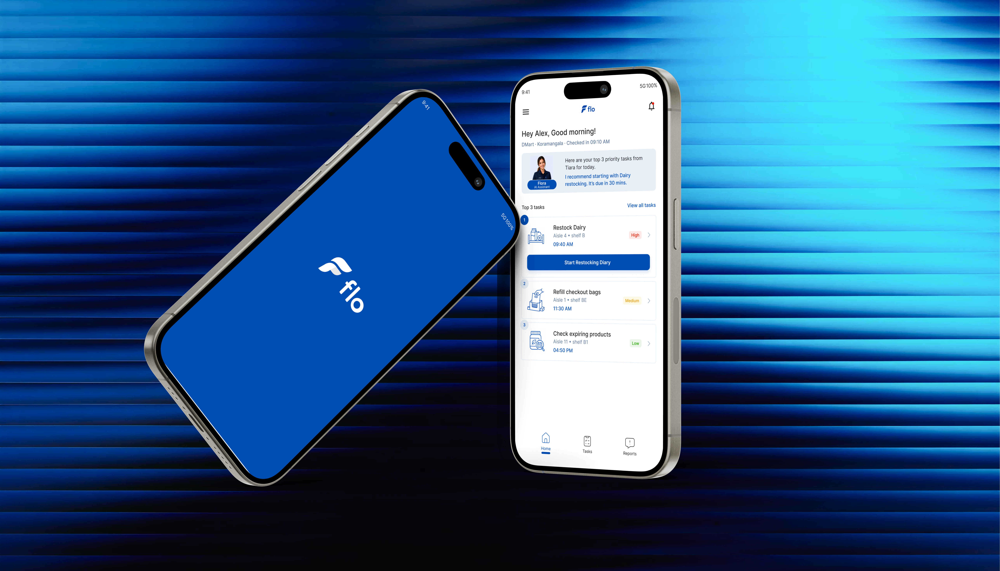
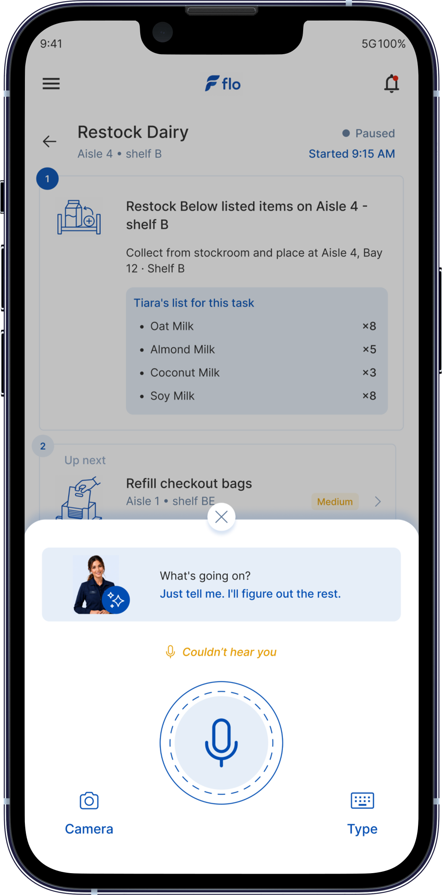
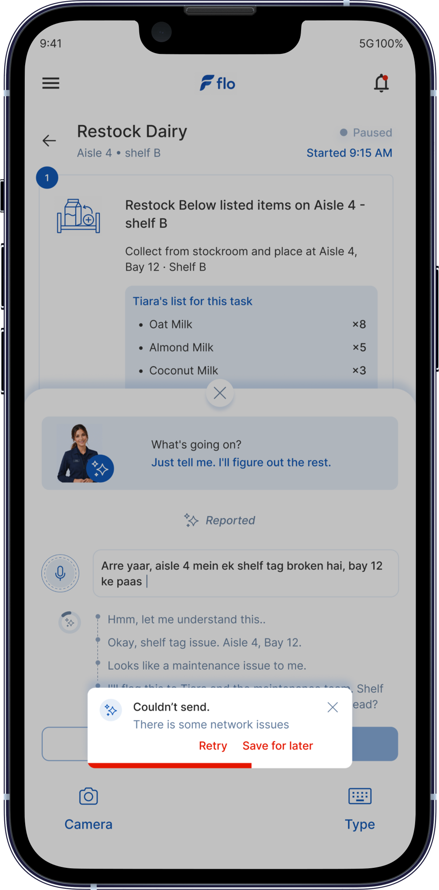

Retail associate
Alex
Alex knows the store deeply, but works with full hands, constant interruptions, limited attention, and little patience for tools that slow him down.

Agentic AI · Retail operations · Concept project
Flo is a retail floor app designed around the realities of a store associate’s shift. Its AI assistant, Flora, helps associates understand priorities, continue interrupted work, report issues naturally, and stay confident without adding more screen time to an already busy day.

People in the journey
Flo is not simply a task-list product. It connects the person doing the work, the person supervising the shift, and the AI agent supporting both.
Retail associate
Alex knows the store deeply, but works with full hands, constant interruptions, limited attention, and little patience for tools that slow him down.
AI assistant
Flora understands task urgency, listens to natural speech, classifies issues, routes reports, and helps Alex continue his work without needing to manage the system.

Supervisor
Tiara assigns work, monitors progress, responds to issues, and needs confidence that the floor is being handled without following up on every small task.

The morning that started this
The store is already busy. Alex may be carrying a scanner, handling a trolley, answering a customer, or walking between the stockroom and the floor. His phone is usually in his pocket or apron-not held carefully in both hands.
He does not dislike technology. He dislikes technology that assumes he has time, attention, and two free hands. He needs something that works within his shift rather than asking the shift to adapt around the app.

The actual problem
Alex is not bad at his job. The problem is that most tools assume a version of his day that does not exist: someone sitting down with full attention available for a screen.
Anything that requires two hands, prolonged focus or several taps is likely to be skipped, delayed or handled outside the system.
Alex may know what needs to be done, but not what should happen first or why one task matters more than another at that moment.
After helping a customer or handling an unexpected issue, Alex can return to a task and genuinely lose his place-not because he is careless, but because the interruption displaced the context.

Why Jobs to Be Done
He is trying to complete a shift feeling capable and in control. A feature-led approach would produce a better checklist. A job-led approach asks what Alex is actually trying to achieve through that checklist.
Functional job
When I start my shift, I want to know exactly what to do and in what order, without repeatedly asking Tiara or rereading a long list.
Emotional job
When something unexpected happens, I want to handle it and continue without feeling that I have failed or made the shift harder.
Social job
When my shift ends, I want Tiara to see that the work was completed properly without needing to follow up with me repeatedly.

Core experience
The primary flow keeps Alex within one continuous work context. Flora handles the transition from recognising an issue to logging and routing it while the task screen remains visible behind the interaction.

Agent behaviour
Flora can classify reports, create logs, identify the right team and notify the relevant person when those actions only affect the system.
Flora asks for confirmation when an action affects Alex’s task, schedule or time-for example, sending a report, pausing a task or rescheduling work.
She does not ask Alex to categorise his own issue, repeat confirmed information or answer open-ended system questions during a busy task.
Language and tone
Alex naturally mixes Hindi and English. Flora is designed to understand the language and tone he uses rather than requiring formal commands or perfect sentences.
Error handling
Error recovery was designed to preserve Alex’s momentum. He should not need to restart a report or wonder whether something disappeared.


Conclusion
Flo shifts retail task management away from a long checklist and toward a context-aware assistant that helps associates stay clear, confident and in flow.
Flora does not replace Alex’s knowledge of the store. She supports it by reducing uncertainty, preserving context, handling administrative work and helping the right information reach the right person.